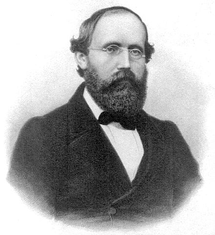
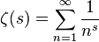
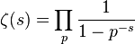

Riemannhypotesen

Riemannhypotesen rör Riemanns zetafunktion, ζ. I det reella talplanet definieras denna som den absolutkonvergenta summan

med Re(s) > 1. Den kan fortsättas analytiskt till det komplexa planet med en pol i 1. Funktionen är absolutkonvergent och har triviala nollställen i alla negativa jämna heltal. Detta kan bevisas genom Leibniz sats. Riemannhypotesen säger att alla icke-triviala nollställen till zetafunktionen har realdel lika med 1/2. På grund av produktrepresentationen

där produkten tas över alla primtal, är hypotesen intressant vid studiet av primtalens fördelning. Riemannhypotesen säger också att ett bevis för Riemannhypotesen skulle till exempel ge information om resttermen i primtalssatsen. Man har kontrollerat Riemannhypotesen genom att ta fram de 1 500 000 000 första lösningarna, men ett bevis saknas fortfarande.
Foto: Wikipedia